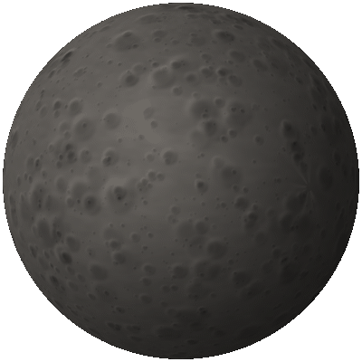

Mercury is the smallest planet in our solar system and nearest to the Sun. It's only slightly larger than Earth's Moon. From the surface of Mercury, the Sun would appear more than three times as large as it does when viewed from Earth, and the sunlight would be as much as seven times brighter.
Mercury's surface temperatures are both extremely hot and cold. Because the planet is so close to the Sun, day temperatures can reach highs of 800°F (430°C). Without an atmosphere to retain that heat at night, temperatures can dip as low as -290°F (-180°C).
Despite its proximity to the Sun, Mercury is not the hottest planet in our solar system – that title belongs to nearby Venus, thanks to its dense atmosphere. But Mercury is the fastest planet, zipping around the Sun every 88 Earth days.
Namesake
Mercury is appropriately named for the swiftest of the ancient Roman gods.
Potential for life
Mercury's environment is not conducive to life as we know it. The temperatures and solar radiation that characterize this planet are most likely too extreme for organisms to adapt to.
Size and distance
With a radius of 1,516 miles (2,440 kilometers), Mercury is a little more than one third the width of Earth. If Earth were the size of a nickel, Mercury would be about as big as a blueberry.
From an average distance of 36 million miles (58 million kilometers), Mercury is 0.4 astronomical units away from the Sun. One astronomical unit, abbreviated as AU, is the distance from the Sun to Earth. From this distance, it takes sunlight 3.2 minutes to travel from the Sun to Mercury.
Orbit and rotation
Mercury's highly eccentric, egg-shaped orbit takes the planet as close as 29 million miles (47 million kilometers) and as far as 43 million miles (70 million kilometers) from the Sun. It speeds around the Sun every 88 days, traveling through space at nearly 29 miles (47 kilometers) per second, faster than any other planet.
Mercury spins slowly on its axis and completes one rotation every 59 Earth days. But when Mercury is moving fastest in its elliptical orbit around the Sun, and it is closest to the Sun, each rotation is not accompanied by sunrise and sunset like it is on most other planets. The morning Sun appears to rise briefly, set, and rise again from some parts of the planet's surface. The same thing happens in reverse at sunset for other parts of the surface. One Mercury solar day, meaning one full day-night cycle, equals 176 Earth days — just over two years on Mercury.
Mercury's axis of rotation is tilted just 2 degrees with respect to the plane of its orbit around the Sun. That means it spins nearly perfectly upright and so does not experience seasons as many other planets do.
Moons and rings
Mercury has no moons and no rings.
Formation
Mercury formed about 4.5 billion years ago when gravity pulled swirling gas and dust together to form this small planet nearest the Sun. Like its fellow terrestrial planets, Mercury has a central core, a rocky mantle, and a solid crust.
Structure
Mercury is the second densest planet, after Earth. It has a large metallic core with a radius of about 1,289 miles (2,074 kilometers), about 85 percent of the planet's radius. There is evidence that it is partly molten or liquid. Mercury's outer shell, comparable to Earth's mantle and crust, is only about 400 kilometers (250 miles) thick.
Surface
Mercury's surface resembles that of Earth's Moon, scarred by many impact craters resulting from collisions with meteoroids and comets. Craters and features on Mercury are named after famous deceased artists, musicians, or authors, including children's author Dr. Seuss and dance pioneer Alvin Ailey.
Very large impact basins, including Caloris (960 miles or 1,550 kilometers in diameter) and Rachmaninoff (190 miles or 306 kilometers in diameter), were created by asteroid impacts on the planet's surface early in the solar system's history. While there are large areas of smooth terrain, there are also cliffs, some hundreds of miles long and soaring up to a mile high. They rose as the planet's interior cooled and contracted over the billions of years since Mercury formed.
Most of Mercury's surface would appear greyish-brown to the human eye. The bright streaks are called crater rays. They form when an asteroid or comet strikes the surface. The tremendous amount of energy released in such an impact digs a big hole in the ground and crushes a huge amount of rock under the point of impact. Some of this crushed material is thrown far from the crater and then falls back to the surface, forming the rays. Fine particles of crushed rock are more reflective than large pieces, so the rays look brighter. The space environment — dust impacts and solar-wind particles — causes the rays to darken with time.
Temperatures on Mercury are extreme. During the day, temperatures on the surface can reach 800 degrees Fahrenheit (430 degrees Celsius). Because the planet has no atmosphere to retain that heat, nighttime temperatures on the surface can drop to minus 290 degrees Fahrenheit (minus 180 degrees Celsius).
Mercury may have water ice at its north and south poles inside deep craters, but only in regions in permanent shadow. In those shadows it could be cold enough to preserve water ice despite the high temperatures on sunlit parts of the planet.
Atmosphere
Instead of an atmosphere, Mercury possesses a thin exosphere made up of atoms blasted off the surface by the solar wind and striking meteoroids. Mercury's exosphere is composed mostly of oxygen, sodium, hydrogen, helium, and potassium.
Magnetosphere
Mercury's magnetic field is offset relative to the planet's equator. Though Mercury's magnetic field at the surface has just 1 percent the strength of Earth's, it interacts with the magnetic field of the solar wind to sometimes create intense magnetic tornadoes that funnel fast, hot solar wind plasma down to the surface of the planet. When the ions strike the surface, they knock off neutrally charged atoms and send them on a loop high into the sky.